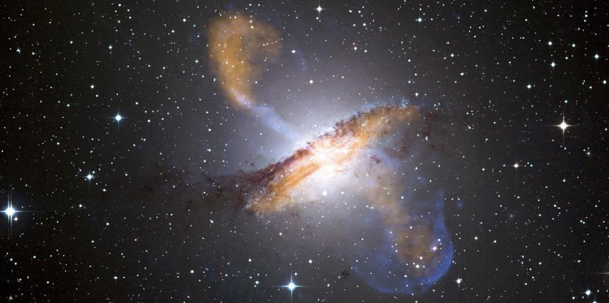
- Discuss the expansion of the universe.
- Explain the Big Bang.
Look at the sky on some clear night when you are away from city lights. There you will see thousands of individual stars and a faint glowing background of millions more. The Milky Way, as it has been called since ancient times, is an arm of our galaxy of stars -- the wordgalaxycoming from the Greek wordgalaxias,meaning milky. We know a great deal about our Milky Way galaxy and of the billions of other galaxies beyond its fringes. But they still provoke wonder and awe (see Figure . And there are still many questions to be answered. Most remarkable when we view the universe on the large scale is that once again explanations of its character and evolution are tied to the very small scale. Particle physics and the questions being asked about the very small scales may also have their answers in the very large scales.
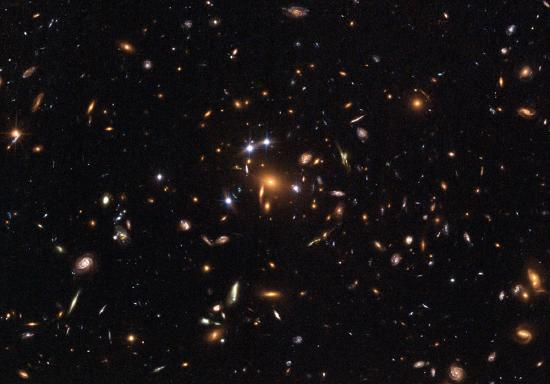
As has been noted in numerous Things Great and Small vignettes, this is not the first time the large has been explained by the small and vice versa. Newton realized that the nature of gravity on Earth that pulls an apple to the ground could explain the motion of the moon and planets so much farther away. Minute atoms and molecules explain the chemistry of substances on a much larger scale. Decays of tiny nuclei explain the hot interior of the Earth. Fusion of nuclei likewise explains the energy of stars. Today, the patterns in particle physics seem to be explaining the evolution and character of the universe. And the nature of the universe has implications for unexplored regions of particle physics.
Cosmologyis the study of the character and evolution of the universe. What are the major characteristics of the universe as we know them today? First, there are approximately \(10^{11}\) galaxies in the observable part of the universe. An average galaxy contains more than \(10^{11}\) stars, with our Milky Way galaxy being larger than average, both in its number of stars and its dimensions. Ours is a spiral-shaped galaxy with a diameter of about 100,000 light years and a thickness of about 2000 light years in the arms with a central bulge about 10,000 light years across. The Sun lies about 30,000 light years from the center near the galactic plane. There are significant clouds of gas, and there is a halo of less-dense regions of stars surrounding the main body. (See Figure Evidence strongly suggests the existence of a large amount of additional matter in galaxies that does not produce light -- the mysterious dark matter we shall later discuss.
![The figure contains three images of the Milky Way galaxy. The first is a side view from outer space and shows a long thin grouping of bright stars against a black background. In the middle of this thin line of stars is a bright yellow ball that looks a bit like an egg yolk in the middle of the egg white. The length of the thin line is given as one hundred thousand light years and it thickness is given as two thousand light years. The diameter of the egg-yolk-like cluster in the middle is given as ten thousand light years. Thirty thousand light years to the left of the center of the egg yolk is the Sun. The second image is a view from above of the Milky Way galaxy and shows several spiral arms twisting outward from the center egg-yolk form. The last image is a photograph from Earth of the Milky Way galaxy in the nighttime sky. It shows a dusting of stars in the sky, with a slight concentration of star dust forming a horizontal stripe across the image.](images/ch34/fig34-3-the-figure-contains-three-images-of-the-.jpg)
Distances are great even within our galaxy and are measured in light years (the distance traveled by light in one year). The average distance between galaxies is on the order of a million light years, but it varies greatly with galaxies forming clusters such as shown in Figure . The Magellanic Clouds, for example, are small galaxies close to our own, some 160,000 light years from Earth. The Andromeda galaxy is a large spiral galaxy like ours and lies 2 million light years away. It is just visible to the naked eye as an extended glow in the Andromeda constellation. Andromeda is the closest large galaxy in our local group, and we can see some individual stars in it with our larger telescopes. The most distant known galaxy is 14 billion light years from Earth -- a truly incredible distance. (See Figure .)
![The first image shows a shining spiral cloud of light and dust. The second image contains three sub images. The first is a large scale view of numerous points of lights and light clouds against a black background. A small square appears in the upper left of the image, and the second image is the zoom-in of this square. In the center of this second image appears a small red dot, which is again boxed in by a square. The third image shows a zoomed-in view of the square from the second image and shows a hazy picture of a circular bright spot surrounded by darker regions.](images/ch34/fig34-4-the-first-image-shows-a-shining-spiral-c.jpg)
Consider the fact that the light we receive from these vast distances has been on its way to us for a long time. In fact, the time in years is the same as the distance in light years. For example, the Andromeda galaxy is 2 million light years away, so that the light now reaching us left it 2 million years ago. If we could be there now, Andromeda would be different. Similarly, light from the most distant galaxy left it 14 billion years ago. We have an incredible view of the past when looking great distances. We can try to see if the universe was different then -- if distant galaxies are more tightly packed or have younger-looking stars, for example, than closer galaxies, in which case there has been an evolution in time. But the problem is that the uncertainties in our data are great. Cosmology is almost typified by these large uncertainties, so that we must be especially cautious in drawing conclusions. One consequence is that there are more questions than answers, and so there are many competing theories. Another consequence is that any hard data produce a major result. Discoveries of some importance are being made on a regular basis, the hallmark of a field in its golden age.
Perhaps the most important characteristic of the universe is that all galaxies except those in our local cluster seem to be moving away from us at speeds proportional to their distance from our galaxy. It looks as if a gigantic explosion, universally called theBig Bang, threw matter out some billions of years ago. This amazing conclusion is based on the pioneering work of Edwin Hubble (1889–1953), the American astronomer. In the 1920s, Hubble first demonstrated conclusively that other galaxies, many previously called nebulae or clouds of stars, were outside our own. He then found that all but the closest galaxies have a red shift in their hydrogen spectra that is proportional to their distance. The explanation is that there is acosmological red shiftdue to the expansion of space itself. The photon wavelength is stretched in transit from the source to the observer. Double the distance, and the red shift is doubled. While this cosmological red shift is often called a Doppler shift, it is not -- space itself is expanding. There is no center of expansion in the universe. All observers see themselves as stationary; the other objects in space appear to be moving away from them. Hubble was directly responsible for discovering that the universe was much larger than had previously been imagined and that it had this amazing characteristic of rapid expansion.
Universal expansion on the scale of galactic clusters (that is, galaxies at smaller distances are not uniformly receding from one another) is an integral part of modern cosmology. For galaxies farther away than about 50 Mly (50 million light years), the expansion is uniform with variations due to local motions of galaxies within clusters. A representative recession velocity \(v\) can be obtained from the simple formula
where \(d\) is the distance to the galaxy and \(H_{0}\) is theHubble constant. The Hubble constant is a central concept in cosmology. Its value is determined by taking the slope of a graph of velocity versus distance, obtained from red shift measurements, such as shown in Figure . We shall use an approximate value of \(H_{0} = 20 (km/s)/Mly\). Thus, \(v = H_{0}d\) is an average behavior for all but the closest galaxies. For example, a galaxy 100 Mly away (as determined by its size and brightness) typically moves away from us at a speed of \(v = \left( 20 (km/s)/Mly \right) \left( 100 Mly \right) = 2000 km/s\). There can be variations in this speed due to so-called local motions or interactions with neighboring galaxies. Conversely, if a galaxy is found to be moving away from us at speed of 100,000 km/s based on its red shift, it is at a distance \(d = v/H_{0} = \left( 10,000 km/s \right) / \left( 20 (km/s)/Mly \right) = 5000 Mly = 5 Gly\) or \(5 \times 10^{9} ly\). This last calculation is approximate, because it assumes the expansion rate was the same 5 billion years ago as now. A similar calculation in Hubble’s measurement changed the notion that the universe is in a steady state.
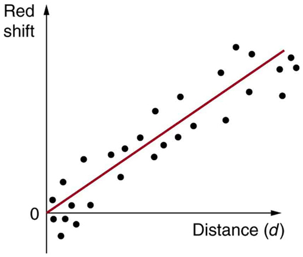
One of the most intriguing developments recently has been the discovery that the expansion of the universe may befaster nowthan in the past, rather than slowing due to gravity as expected. Various groups have been looking, in particular, at supernovas in moderately distant galaxies (less than 1 Gly) to get improved distance measurements. Those distances are larger than expected for the observed galactic red shifts, implying the expansion was slower when that light was emitted. This has cosmological consequences that are discussed in "Dark Matter and Closure." The first results, published in 1999, are only the beginning of emerging data, with astronomy now entering a data-rich era.
Figure shows how the recession of galaxies looks like the remnants of a gigantic explosion, the famous Big Bang. Extrapolating backward in time, the Big Bang would have occurred between 13 and 15 billion years ago when all matter would have been at a point. Questions instantly arise. What caused the explosion? What happened before the Big Bang? Was there a before, or did time start then? Will the universe expand forever, or will gravity reverse it into a Big Crunch? And is there other evidence of the Big Bang besides the well-documented red shifts?
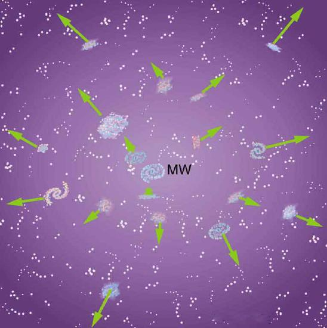
The Russian-born American physicist George Gamow (1904–1968) was among the first to note that, if there was a Big Bang, the remnants of the primordial fireball should still be evident and should be blackbody radiation. Since the radiation from this fireball has been traveling to us since shortly after the Big Bang, its wavelengths should be greatly stretched. It will look as if the fireball has cooled in the billions of years since the Big Bang. Gamow and collaborators predicted in the late 1940s that there should be blackbody radiation from the explosion filling space with a characteristic temperature of about 7 K. Such blackbody radiation would have its peak intensity in the microwave part of the spectrum. (See Figure .\) In 1964, Arno Penzias and Robert Wilson, two American scientists working with Bell Telephone Laboratories on a low-noise radio antenna, detected the radiation and eventually recognized it for what it is.
Figure shows the spectrum of this microwave radiation that permeates space and is of cosmic origin. It is the most perfect blackbody spectrum known, and the temperature of the fireball remnant is determined from it to be \(2.75 \pm 0.002 K\). The detection of what is now called thecosmic microwave background(CMBR) was so important (generally considered as important as Hubble’s detection that the galactic red shift is proportional to distance) that virtually every scientist has accepted the expansion of the universe as fact. Penzias and Wilson shared the 1978 Nobel Prize in Physics for their discovery.
![Figure a shows an artist's rendition of the Big Bang explosion. Here, the explosion is depicted as a flash of light then a nonuniform purple-colored sphere containing galaxies. With each galaxy is associated an arrow pointing radially outward. The length of the arrows varies from one galaxy to the next. Figure b shows a graph of intensity versus wavelength. The intensity is on an arbitrary scale and the wavelength ranges from zero point five to 10 millimeters. The intensity begins at zero point two then rises sharply to one point two at a wavelength of one millimeter. It then descends to near zero by ten millimeters.](images/ch34/fig34-7-figure-a-shows-an-artists-rendition-of-t.jpg)
Making Connections: Cosmology and Particle Physics
There are many connections of cosmology -- by definition involving physics on the largest scale -- with particle physics -- by definition physics on the smallest scale. Among these are the dominance of matter over antimatter, the nearly perfect uniformity of the cosmic microwave background, and the mere existence of galaxies.
Matter versus antimatter
We know from direct observation that antimatter is rare. The Earth and the solar system are nearly pure matter. Space probes and cosmic rays give direct evidence -- the landing of the Viking probes on Mars would have been spectacular explosions of mutual annihilation energy if Mars were antimatter. We also know that most of the universe is dominated by matter. This is proven by the lack of annihilation radiation coming to us from space, particularly the relative absence of 0.511-MeV \(\gamma\) rays created by the mutual annihilation of electrons and positrons. It seemed possible that there could be entire solar systems or galaxies made of antimatter in perfect symmetry with our matter-dominated systems. But the interactions between stars and galaxies would sometimes bring matter and antimatter together in large amounts. The annihilation radiation they would produce is simply not observed. Antimatter in nature is created in particle collisions and in \(\beta ^{+}\) decays, but only in small amounts that quickly annihilate, leaving almost pure matter surviving.
Particle physics seems symmetric in matter and antimatter. Why isn’t the cosmos? The answer is that particle physics is not quite perfectly symmetric in this regard. The decay of one of the neutral \(K\)-mesons, for example, preferentially creates more matter than antimatter. This is caused by a fundamental small asymmetry in the basic forces. This small asymmetry produced slightly more matter than antimatter in the early universe. If there was only one part in \(10^{9}\) more matter (a small asymmetry), the rest would annihilate pair for pair, leaving nearly pure matter to form the stars and galaxies we see today. So the vast number of stars we observe may be only a tiny remnant of the original matter created in the Big Bang. Here at last we see a very real and important asymmetry in nature. Rather than be disturbed by an asymmetry, most physicists are impressed by how small it is. Furthermore, if the universe were completely symmetric, the mutual annihilation would be more complete, leaving far less matter to form us and the universe we know.
How can something so old have so few wrinkles?
A troubling aspect of cosmic microwave background radiation (CMBR) was soon recognized. True, the CMBR verified the Big Bang, had the correct temperature, and had a blackbody spectrum as expected. But the CMBR wastoosmooht -- it looked identical in every direction. Galaxies and other similar entities could not be formed without the existence of fluctuations in the primordial stages of the universe and so there should be hot and cool spots in the CMBR, nicknamed wrinkles, corresponding to dense and sparse regions of gas caused by turbulence or early fluctuations. Over time, dense regions would contract under gravity and form stars and galaxies. Why aren’t the fluctuations there? (This is a good example of an answer producing more questions.) Furthermore, galaxies are observed very far from us, so that they formed very long ago. The problem was to explain how galaxies could form so early and so quickly after the Big Bang if its remnant fingerprint is perfectly smooth. The answer is that if you look very closely, the CMBR is not perfectly smooth, only extremely smooth.
A satellite called the Cosmic Background Explorer (COBE) carried an instrument that made very sensitive and accurate measurements of the CMBR. In April of 1992, there was extraordinary publicity of COBE’s first results -- there were small fluctuations in the CMBR. Further measurements were carried out by experiments including NASA’s Wilkinson Microwave Anisotropy Probe (WMAP), which launched in 2001. Data from WMAP provided a much more detailed picture of the CMBR fluctuations. (See Figure .) These amount to temperature fluctuations of only \(200 \mu k\) out of 2.7 K, better than one part in 1000. The WMAP experiment will be followed up by the European Space Agency’s Planck Surveyor, which launched in 2009.
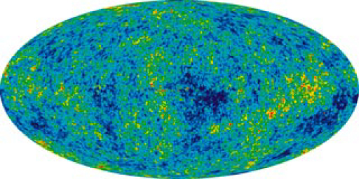
Let us now examine the various stages of the overall evolution of the universe from the Big Bang to the present, illustrated in Figure . Note that scientific notation is used to encompass the many orders of magnitude in time, energy, temperature, and size of the universe. Going back in time, the two lines approach but do not cross (there is no zero on an exponential scale). Rather, they extend indefinitely in ever-smaller time intervals to some infinitesimal point.
![The figure shows a horizontal bar whose left end is white and right end is black. Between these ends the bar is rainbow colored with blue at the left and red at the right. On the top of the bar is a time scale that starts at the left at ten to the minus forty three seconds and goes to one point five times ten to the eleven years, which is the present time. On the bottom of the bar is an energy scale that starts at the left at ten to the nineteenth G E V and goes to below one G E V. The left end of the bar is labeled T O E and complete symmetry, identical particles. Progressing to the right, the next section of the bar, from ten to the minus forty three seconds to ten to the minus thirty five seconds, is labeled G U T and leptons, gluons, quarks, weak bosons, photons. The next section of the bar, out to ten to the minus thirty two seconds (or ten to the fourteenth G E V) is labeled spontaneous symmetry breaking, inflation. During this stage, the bar widens significantly. The next section goes to ten to the minus eleven seconds (or one hundred G E V) and is labeled electroweak and leptons, quarks, w plus minus, z zero, photons. The point ten to the minus eleven seconds is labeled leptons, hadrons, photons. The next section goes to three times ten to the fifth years. The point about midway through this stage is labeled one G E V. In this stage are labeled the following eras: at about ten to the minus six seconds is the quark era, at about ten to the minus four seconds is the lepton era, at about ten seconds is the photon era, then at about ten seconds is the nucleosynthesis era. The point three times ten to the fifth years is labeled light nuclei. The next section goes to ten to the eighth years and is labeled atoms. The point ten to the eighth years is labeled stars and protogalaxies. Next comes galaxies at ten to the ninth years, then Earth comes at ten to the eleventh years, life at one point zero five times ten to the eleventh years, then finally the present time at one point five times ten to the eleventh years.](images/ch34/fig34-9-the-figure-shows-a-horizontal-bar-whose-.jpg)
Going back in time is equivalent to what would happen if expansion stopped and gravity pulled all the galaxies together, compressing and heating all matter. At a time long ago, the temperature and density were too high for stars and galaxies to exist. Before then, there was a time when the temperature was too great for atoms to exist. And farther back yet, there was a time when the temperature and density were so great that nuclei could not exist. Even farther back in time, the temperature was so high that average kinetic energy was great enough to create short-lived particles, and the density was high enough to make this likely. When we extrapolate back to the point of \(W^{\pm}\) and \(Z^{0}\) production (thermal energies reaching 1 TeV, or a temperature of about \(10^{15} K\)), we reach the limits of what we know directly about particle physics. This is at a time about \(10^{-12}s\) after the Big Bang. While \(10^{-12}s\) may seem to be negligibly close to the instant of creation, it is not. There are important stages before this time that are tied to the unification of forces. At those stages, the universe was at extremely high energies and average particle separations were smaller than we can achieve with accelerators. What happened in the early stages before \(10^{-22} s\) is crucial to all later stages and is possibly discerned by observing present conditions in the universe. One of these is the smoothness of the CMBR.
Names are given to early stages representing key conditions. The stage before \(10^{-11} s\) back to \(10^{-34} s\) is claled theelectroweak epoch, because the electromagnetic and weak forces become identical for energies above about 100 GeV. As discussed earlier, theorists expect that the strong force becomes identical to and thus unified with the electroweak force at energies of about \(10^{14} GeV\). The average particle energy would be this great at \(10^{-34} s\) after the Big Bang, if there are no surprises in the unknown physics at energies above about 1 TeV. At the immense energy of \(10^{14} GeV\) (corresponding to a temperature of about \(10^{26} K\)), the \(W^{\pm}\) and \(Z^{0}\) carrier particles would be transformed into massless gauge bosons to accomplish the unification. Before \(10^{-34} s\) back to about \(10^{43} s\), we have Grand Unification in theGUT epoch, in which all forces except gravity are identical. At \(10^{-43} s\), the average energy reaches the immense \(10^{19} GeV\) needed to unify gravity with the other forces in TOE, the Theory of Everything. Before that time is theTOE epoch,but we have almost no idea as to the nature of the universe then, since we have no workable theory of quantum gravity. We call the hypothetical unified forcesuperforce.
Now let us imagine starting at TOE and moving forward in time to see what type of universe is created from various events along the way. As temperatures and average energies decrease with expansion, the universe reaches the stage where average particle separations are large enough to see differences between the strong and electroweak forces (at about \(10^{-35} s\)). After this time, the forces become distinct in almost all interactions -- theyspontaneoussymmetry breaking, in which conditions spontaneously evolved to a point where the forces were no longer unified, breaking that symmetry. This is analogous to a phase transition in the universe, and a clever proposal by American physicist Alan Guth in the early 1980s ties it to the smoothness of the CMBR. Guth proposed that spontaneous symmetry breaking (like a phase transition during cooling of normal matter) released an immense amount of energy that caused the universe to expand extremely rapidly for the brief time from \(10^{-35} s\) to about \(10^{-32} s\). This expansion may have been by an incredible factor of \(10^{50}\) or more in the size of the universe and is thus called theinflationary scenario. One result of this inflation is that it would stretch the wrinkles in the universe nearly flat, leaving an extremely smooth CMBR. While speculative, there is as yet no other plausible explanation for the smoothness of the CMBR. Unless the CMBR is not really cosmic but local in origin, the distances between regions of similar temperatures are too great for any coordination to have caused them, since any coordination mechanism must travel at the speed of light. Again, particle physics and cosmology are intimately entwined. There is little hope that we may be able to test the inflationary scenario directly, since it occurs at energies near \(10^{14} GeV\), vastly greater than the limits of modern accelerators. But the idea is so attractive that it is incorporated into most cosmological theories.
Characteristics of the present universe may help us determine the validity of this intriguing idea. Additionally, the recent indications that the universe’s expansion rate may beincreasing(see "Dark Matter and Closure") could even imply that we areinanother inflationary epoch.
It is important to note that, if conditions such as those found in the early universe could be created in the laboratory, we would see the unification of forces directly today. The forces have not changed in time, but the average energy and separation of particles in the universe have. As discussed in "The Four Basic Forces," the four basic forces in nature are distinct under most circumstances found today. The early universe and its remnants provide evidence from times when they were unified under most circumstances.
📖 OpenStax College Physics, Section 34.1. openstax.org · CC BY 4.0
- Explain the effect of gravity on light.
- Discuss black hole.
- Explain quantum gravity.
When we talk of black holes or the unification of forces, we are actually discussing aspects of general relativity and quantum gravity. We know from "Special Relativity" that relativity is the study of how different observers measure the same event, particularly if they move relative to one another. Einstein’s theory ofgeneral relativitydescribes all types of relative motion including accelerated motion and the effects of gravity. General relativity encompasses special relativity and classical relativity in situations where acceleration is zero and relative velocity is small compared with the speed of light. Many aspects of general relativity have been verified experimentally, some of which are better than science fiction in that they are bizarre but true.Quantum gravityis the theory that deals with particle exchange of gravitons as the mechanism for the force, and with extreme conditions where quantum mechanics and general relativity must both be used. A good theory of quantum gravity does not yet exist, but one will be needed to understand how all four forces may be unified. If we are successful, the theory of quantum gravity will encompass all others, from classical physics to relativity to quantum mechanics -- truly a Theory of Everything (TOE).
Einstein first considered the case of no observer acceleration when he developed the revolutionary special theory of relativity, publishing his first work on it in 1905. By 1916, he had laid the foundation of general relativity, again almost on his own. Much of what Einstein did to develop his ideas was to mentally analyze certain carefully and clearly defined situations -- doing this is to perform athought experiment. Figure illustrates a thought experiment like the ones that convinced Einstein that light must fall in a gravitational field. Think about what a person feels in an elevator that is accelerated upward. It is identical to being in a stationary elevator in a gravitational field. The feet of a person are pressed against the floor, and objects released from hand fall with identical accelerations. In fact, it is not possible, without looking outside, to know what is happening -- acceleration upward or gravity. This led Einstein to correctly postulate that acceleration and gravity will produce identical effects in all situations. So, if acceleration affects light, then gravity will, too. Figure shows the effect of acceleration on a beam of light shone horizontally at one wall. Since the accelerated elevator moves up during the time light travels across the elevator, the beam of light strikes low, seeming to the person to bend down. (Normally a tiny effect, since the speed of light is so great.) The same effect must occur due to gravity, Einstein reasoned, since there is no way to tell the effects of gravity acting downward from acceleration of the elevator upward. Thus gravity affects the path of light, even though we think of gravity as acting between masses and photons are massless.
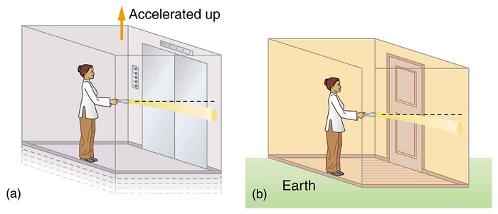
Einstein’s theory of general relativity got its first verification in 1919 when starlight passing near the Sun was observed during a solar eclipse. (See Figure .) During an eclipse, the sky is darkened and we can briefly see stars. Those in a line of sight nearest the Sun should have a shift in their apparent positions. Not only was this shift observed, but it agreed with Einstein’s predictions well within experimental uncertainties. This discovery created a scientific and public sensation. Einstein was now a folk hero as well as a very great scientist. The bending of light by matter is equivalent to a bending of space itself, with light following the curve. This is another radical change in our concept of space and time. It is also another connection that any particle with mass or energy (massless photons) is affected by gravity.
There are several current forefront efforts related to general relativity. One is the observation and analysis of gravitational lensing of light. Another is analysis of the definitive proof of the existence of black holes. Direct observation of gravitational waves or moving wrinkles in space is being searched for. Theoretical efforts are also being aimed at the possibility of time travel and wormholes into other parts of space due to black holes.
As you can see in Figure , light is bent toward a mass, producing an effect much like a converging lens (large masses are needed to produce observable effects). On a galactic scale, the light from a distant galaxy could be “lensed” into several images when passing close by another galaxy on its way to Earth. Einstein predicted this effect, but he considered it unlikely that we would ever observe it. A number of cases of this effect have now been observed; one is shown in Figure . This effect is a much larger scale verification of general relativity. But such gravitational lensing is also useful in verifying that the red shift is proportional to distance. The red shift of the intervening galaxy is always less than that of the one being lensed, and each image of the lensed galaxy has the same red shift. This verification supplies more evidence that red shift is proportional to distance. Confidence that the multiple images are not different objects is bolstered by the observations that if one image varies in brightness over time, the others also vary in the same manner.
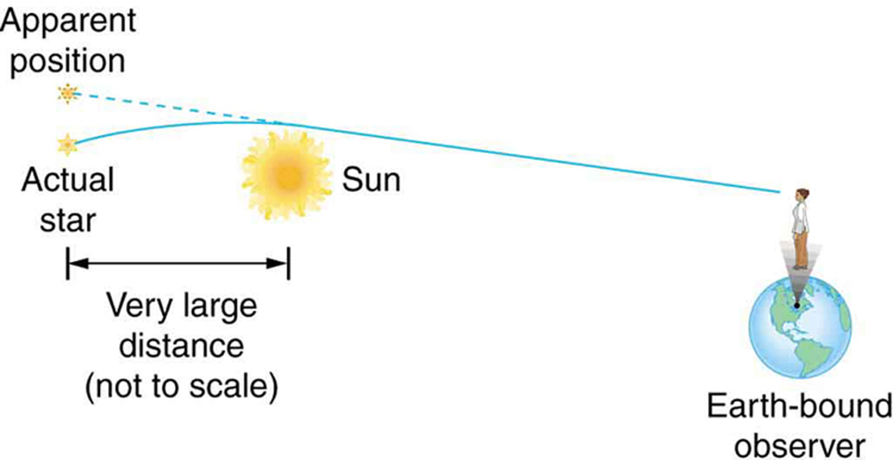
![At the left of the first figure is a galaxy and, symmetrically above and below it, two images of it. In the middle of the figure is another galaxy, and at the right is the Earth. Two light rays leave the left-most galaxy, with one ray traveling just above the middle galaxy to be bent downward so that it reaches the Earth. The second ray travels a similar path but goes below the middle galaxy and is bent upward to reach the Earth. Because of the bend in the light rays, an Earth-bound observer detects two images of the left-most galaxy: one above the middle galaxy and one below it. Figure b shows a central bright spot surrounded by four peripheral bright spots against a black background. The four peripheral bright spots are arranged symmetrically around the central spot: one above, one below, one to the left, and one the right.](images/ch34/fig34-12-at-the-left-of-the-first-figure-is-a-gal.jpg)
Black holesare objects having such large gravitational fields that things can fall in, but nothing, not even light, can escape. Bodies, like the Earth or the Sun, have what is called anescape velocity. If an object moves straight up from the body, starting at the escape velocity, it will just be able to escape the gravity of the body. The greater the acceleration of gravity on the body, the greater is the escape velocity. As long ago as the late 1700s, it was proposed that if the escape velocity is greater than the speed of light, then light cannot escape. Simon Laplace (1749–1827), the French astronomer and mathematician, even incorporated this idea of a dark star into his writings. But the idea was dropped after Young’s double slit experiment showed light to be a wave. For some time, light was thought not to have particle characteristics and, thus, could not be acted upon by gravity. The idea of a black hole was very quickly reincarnated in 1916 after Einstein’s theory of general relativity was published. It is now thought that black holes can form in the supernova collapse of a massive star, forming an object perhaps 10 km across and having a mass greater than that of our Sun. It is interesting that several prominent physicists who worked on the concept, including Einstein, firmly believed that nature would find a way to prohibit such objects.
Black holes are difficult to observe directly, because they are small and no light comes directly from them. In fact, no light comes from inside theevent horizon, which is defined to be at a distance from the object at which the escape velocity is exactly the speed of light. The radius of the event horizon is known as theSchwarzschild radius\(R_{S}\) and is given by
where \(G\) is the universal gravitational constant, \(M\) is the mass of the body, and \(c\) is the speed of light. The event horizon is the edge of the black hole and \(R_{S}\) is its radius (that is, the size of a black hole is twice \(R_{S}\)). Since \(G\) is small and \(c^{2}\) is large, you can see that black holes are extremely small, only a few kilometers for masses a little greater than the Sun’s. The object itself is inside the event horizon.
Physics near a black hole is fascinating. Gravity increases so rapidly that, as you approach a black hole, the tidal effects tear matter apart, with matter closer to the hole being pulled in with much more force than that only slightly farther away. This can pull a companion star apart and heat inflowing gases to the point of producing X rays. (See Figure .) We have observed X rays from certain binary star systems that are consistent with such a picture. This is not quite proof of black holes, because the X rays could also be caused by matter falling onto a neutron star. These objects were first discovered in 1967 by the British astrophysicists, Jocelyn Bell and Anthony Hewish.Neutron starsare literally a star composed of neutrons. They are formed by the collapse of a star’s core in a supernova, during which electrons and protons are forced together to form neutrons (the reverse of neutron \(\beta\) decay). Neutron stars are slightly larger than a black hole of the same mass and will not collapse further because of resistance by the strong force. However, neutron stars cannot have a mass greater than about eight solar masses or they must collapse to a black hole. With recent improvements in our ability to resolve small details, such as with the orbiting Chandra X-ray Observatory, it has become possible to measure the masses of X-ray-emitting objects by observing the motion of companion stars and other matter in their vicinity. What has emerged is a plethora of X-ray-emitting objects too massive to be neutron stars. This evidence is considered conclusive and the existence of black holes is widely accepted. These black holes are concentrated near galactic centers.
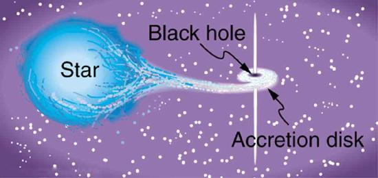
We also have evidence that supermassive black holes may exist at the cores of many galaxies, including the Milky Way. Such a black hole might have a mass millions or even billions of times that of the Sun, and it would probably have formed when matter first coalesced into a galaxy billions of years ago. Supporting this is the fact that very distant galaxies are more likely to have abnormally energetic cores. Some of the moderately distant galaxies, and hence among the younger, are known asquasarsand emit as much or more energy than a normal galaxy but from a region less than a light year across. Quasar energy outputs may vary in times less than a year, so that the energy-emitting region must be less than a light year across. The best explanation of quasars is that they are young galaxies with a supermassive black hole forming at their core, and that they become less energetic over billions of years. In closer superactive galaxies, we observe tremendous amounts of energy being emitted from very small regions of space, consistent with stars falling into a black hole at the rate of one or more a month. The Hubble Space Telescope (1994) observed an accretion disk in the galaxy M87 rotating rapidly around a region of extreme energy emission (Figure . A jet of material being ejected perpendicular to the plane of rotation gives further evidence of a supermassive black hole as the engine.
![The image on the left shows what appears to be a spherical white burst of dust from which two yellow-orange jets emanate, one going up and the other going down. From the top of the upper jet to the bottom of the lower jet is about one hundred and eighty thousand light years. The background is black. The center of the white burst is expanded in the image on the right and appears as a bright yellow doughnut-shaped disk spread over four hundred light years. At the center of the disk is a bright spot that may be the source of the jets.](images/ch34/fig34-14-the-image-on-the-left-shows-what-appears.jpg)
#### Gravitational Waves
If a massive object distorts the space around it, like the foot of a water bug on the surface of a pond, then movement of the massive object should create waves in space like those on a pond.Gravitational wavesare mass-created distortions in space that propagate at the speed of light and are predicted by general relativity. Since gravity is by far the weakest force, extreme conditions are needed to generate significant gravitational waves. Gravity near binary neutron star systems is so great that significant gravitational wave energy is radiated as the two neutron stars orbit one another. American astronomers, Joseph Taylor and Russell Hulse, measured changes in the orbit of such a binary neutron star system. They found its orbit to change precisely as predicted by general relativity, a strong indication of gravitational waves, and were awarded the 1993 Nobel Prize. But direct detection of gravitational waves on Earth would be conclusive. For many years, various attempts have been made to detect gravitational waves by observing vibrations induced in matter distorted by these waves. American physicist Joseph Weber pioneered this field in the 1960s, but no conclusive events have been observed. (No gravity wave detectors were in operation at the time of the 1987A supernova, unfortunately.) There are now several ambitious systems of gravitational wave detectors in use around the world. These include the LIGO (Laser Interferometer Gravitational Wave Observatory) system with two laser interferometer detectors, one in the state of Washington and another in Louisiana (Figure and the VIRGO (Variability of Irradiance and Gravitational Oscillations) facility in Italy with a single detector.
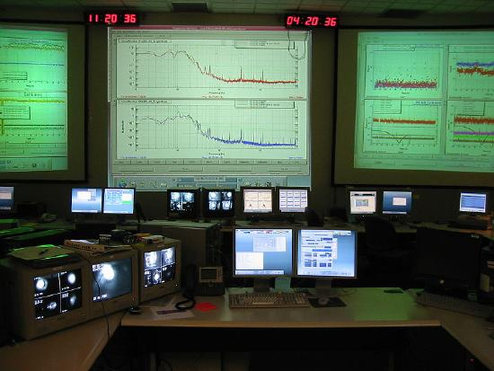
Quantum gravity is important in those situations where gravity is so extremely strong that it has effects on the quantum scale, where the other forces are ordinarily much stronger. The early universe was such a place, but black holes are another. The first significant connection between gravity and quantum effects was made by the Russian physicist Yakov Zel’dovich in 1971, and other significant advances followed from the British physicist Stephen Hawking (Figure . These two showed that black holes could radiate away energy by quantum effects just outside the event horizon (nothing can escape from inside the event horizon).
Black holes are, thus, expected to radiate energy and shrink to nothing, although extremely slowly for most black holes. The mechanism is the creation of a particle-antiparticle pair from energy in the extremely strong gravitational field near the event horizon. One member of the pair falls into the hole and the other escapes, conserving momentum (Figure . When a black hole loses energy and, hence, rest mass, its event horizon shrinks, creating an even greater gravitational field. This increases the rate of pair production so that the process grows exponentially until the black hole is nuclear in size. A final burst of particles and \(\gamma\) rays ensues. This is an extremely slow process for black holes about the mass of the Sun (produced by supernovas) or larger ones (like those thought to be at galactic centers), taking on the order of \(10^{67}\) years or longer! Smaller black holes would evaporate faster, but they are only speculated to exist as remnants of the Big Bang. Searches for characteristic \(\gamma\)-ray bursts have produced events attributable to more mundane objects like neutron stars accreting matter.
![The figure shows a purple doughnut-shaped object with a black hole in the middle. Many different-colored spots are arranged like glazing around the edge of the doughnut. The deep purple of the doughnut fades to a light purple as you move away from the doughnut, and the space around the doughnut is filled with randomly placed white dots. Various particles are shown either falling in or escaping from the doughnut. There is a proton antiproton pair, with the proton escaping and the antiproton falling back into the doughnut. There is an electron-positron pair in which the positron escapes then annihilates with an electron outside the doughnut, with the subsequent gamma rays escaping the doughnut. There is a muon-antimuon pair that is created then both fall back into the doughnut. Finally, there is an electron-positron pair that is generated, with the electron escaping and the positron falling back into the doughnut.](images/ch34/fig34-17-the-figure-shows-a-purple-doughnut-shape.jpg)
Wormholes and time travel
The subject of time travel captures the imagination. Theoretical physicists, such as the American Kip Thorne, have treated the subject seriously, looking into the possibility that falling into a black hole could result in popping up in another time and place -- a trip through a so-called wormhole. Time travel and wormholes appear in innumerable science fiction dramatizations, but the consensus is that time travel is not possible in theory. While still debated, it appears that quantum gravity effects inside a black hole prevent time travel due to the creation of particle pairs. Direct evidence is elusive.
Theoretical studies indicate that, at extremely high energies and correspondingly early in the universe, quantum fluctuations may make time intervals meaningful only down to some finite time limit. Early work indicated that this might be the case for times as long as \(10^{-43}s\), the time at which all forces were unified. If so, then it would be meaningless to consider the universe at times earlier than this. Subsequent studies indicate that the crucial time may be as short as \(10^{-95}s\). But the point remains -- quantum gravity seems to imply that there is no such thing as a vanishingly short time. Time may, in fact, be grainy with no meaning to time intervals shorter than some tiny but finite size.
The future of quantum gravity
Not only is quantum gravity in its infancy, no one knows how to get started on a theory of gravitons and unification of forces. The energies at which TOE should be valid may be so high (at least \(10^{19} GeV\)) and the necessary particle separation so small (less than \(10^{-35} m\)) that only indirect evidence can provide clues. For some time, the common lament of theoretical physicists was one so familiar to struggling students -- how do you even get started? But Hawking and others have made a start, and the approach many theorists have taken is called Superstring theory, the topic of the "Superstrings."
📖 OpenStax College Physics, Section 34.2. openstax.org · CC BY 4.0
- Define Superstring theory.
- Explain the relationship between Superstring theory and the Big Bang.
Superstring theoryis an attempt to unify gravity with the other three forces and, thus, must contain quantum gravity. The main tenet of Superstring theory is that fundamental particles, including the graviton that carries the gravitational force, act like one-dimensional vibrating strings. Since gravity affects the time and space in which all else exists, Superstring theory is an attempt at a Theory of Everything (TOE). Each independent quantum number is thought of as a separate dimension in some super space (analogous to the fact that the familiar dimensions of space are independent of one another) and is represented by a different type of Superstring. As the universe evolved after the Big Bang and forces became distinct (spontaneous symmetry breaking), some of the dimensions of superspace are imagined to have curled up and become unnoticed.
Forces are expected to be unified only at extremely high energies and at particle separations on the order of \(10^{-35} m\). This could mean that Superstrings must have dimensions or wavelengths of this size or smaller. Just as quantum gravity may imply that there are no time intervals shorter than some finite value, it also implies that there may be no sizes smaller than some tiny but finite value. That may be about \(10^{-35}\). If so, and if Superstring theory can explain all it strives to, then the structures of Superstrings are at the lower limit of the smallest possible size and can have no further substructure. This would be the ultimate answer to the question the ancient Greeks considered. There is a finite lower limit to space.
Not only is Superstring theory in its infancy, it deals with dimensions about 17 orders of magnitude smaller than the \(10^{-18} m\) details that we have been able to observe directly. It is thus relatively unconstrained by experiment, and there are a host of theoretical possibilities to choose from. This has led theorists to make choices subjectively (as always) on what is the most elegant theory, with less hope than usual that experiment will guide them. It has also led to speculation of alternate universes, with their Big Bangs creating each new universe with a random set of rules. These speculations may not be tested even in principle, since an alternate universe is by definition unattainable. It is something like exploring a self-consistent field of mathematics, with its axioms and rules of logic that are not consistent with nature. Such endeavors have often given insight to mathematicians and scientists alike and occasionally have been directly related to the description of new discoveries.
📖 OpenStax College Physics, Section 34.3. openstax.org · CC BY 4.0
- Discuss the existence of dark matter.
- Explain neutrino oscillations and their consequences.
One of the most exciting problems in physics today is the fact that there is far more matter in the universe than we can see. The motion of stars in galaxies and the motion of galaxies in clusters imply that there is about 10 times as much mass as in the luminous objects we can see. The indirectly observed non-luminous matter is calleddark matter. Why is dark matter a problem? For one thing, we do not know what it is. It may well be 90% of all matter in the universe, yet there is a possibility that it is of a completely unknown form -- a stunning discovery if verified. Dark matter has implications for particle physics. It may be possible that neutrinos actually have small masses or that there are completely unknown types of particles. Dark matter also has implications for cosmology, since there may be enough dark matter to stop the expansion of the universe. That is another problem related to dark matter -- we do not know how much there is. We keep finding evidence for more matter in the universe, and we have an idea of how much it would take to eventually stop the expansion of the universe, but whether there is enough is still unknown.
The first clues that there is more matter than meets the eye came from the Swiss-born American astronomer Fritz Zwicky in the 1930s; some initial work was also done by the American astronomer Vera Rubin. Zwicky measured the velocities of stars orbiting the galaxy, using the relativistic Doppler shift of their spectra (see Figure (a)). He found that velocity varied with distance from the center of the galaxy, as graphed in Figure (b). If the mass of the galaxy was concentrated in its center, as are its luminous stars, the velocities should decrease as the square root of the distance from the center. Instead, the velocity curve is almost flat, implying that there is a tremendous amount of matter in the galactic halo. Although not immediately recognized for its significance, such measurements have now been made for many galaxies, with similar results. Further, studies of galactic clusters have also indicated that galaxies have a mass distribution greater than that obtained from their brightness (proportional to the number of stars), which also extends into large halos surrounding the luminous parts of galaxies. Observations of other EM wavelengths, such as radio waves and X rays, have similarly confirmed the existence of dark matter. Take, for example, X rays in the relatively dark space between galaxies, which indicates the presence of previously unobserved hot, ionized gas (see Figure (c)).
Is the universe open or closed? That is, will the universe expand forever or will it stop, perhaps to contract? This, until recently, was a question of whether there is enough gravitation to stop the expansion of the universe. In the past few years, it has become a question of the combination of gravitation and what is called thecosmological constant. The cosmological constant was invented by Einstein to prohibit the expansion or contraction of the universe. At the time he developed general relativity, Einstein considered that an illogical possibility. The cosmological constant was discarded after Hubble discovered the expansion, but has been re-invoked in recent years.
Gravitational attraction between galaxies is slowing the expansion of the universe, but the amount of slowing down is not known directly. In fact, the cosmological constant can counteract gravity’s effect. As recent measurements indicate, the universe is expandingfasternow than in the past -- perhaps a “modern inflationary era” in which the dark energy is thought to be causing the expansion of the present-day universe to accelerate. If the expansion rate were affected by gravity alone, we should be able to see that the expansion rate between distant galaxies was once greater than it is now. However, measurements show it waslessthan now. We can, however, calculate the amount of slowing based on the average density of matter we observe directly. Here we have a definite answer -- there is far less visible matter than needed to stop expansion. Thecritical density\(\rho_{c}\) is defined to be the density needed to just halt universal expansion in a universe with no cosmological constant. It is estimated to be about
However, this estimate of \(\rho_{c}\) is only good to about a factor of two, due to uncertainties in the expansion rate of the universe. The critical density is equivalent to an average of only a few nucleons per cubic meter, remarkably small and indicative of how truly empty intergalactic space is. Luminous matter seems to account for roughly \(0.5 \%\) to \(2 \%\) of the critical density, far less than that needed for closure. Taking into account the amount of dark matter we detect indirectly and all other types of indirectly observed normal matter, there is only \(10 \%\) to \(40 \%\) of what is needed for closure. If we are able to refine the measurements of expansion rates now and in the past, we will have our answer regarding the curvature of space and we will determine a value for the cosmological constant to justify this observation. Finally, the most recent measurements of the CMBR have implications for the cosmological constant, so it is not simply a device concocted for a single purpose.
After the recent experimental discovery of the cosmological constant, most researchers feel that the universe should be just barely open. Since matter can be thought to curve the space around it, we call an open universenegatively curved. This means that you can in principle travel an unlimited distance in any direction. A universe that is closed is calledpositively curved.This means that if you travel far enough in any direction, you will return to your starting point, analogous to circumnavigating the Earth. In between these two is aflat (zero curvature) universe.The recent discovery of the cosmological constant has shown the universe is very close to flat, and will expand forever. Why do theorists feel the universe is flat? Flatness is a part of the inflationary scenario that helps explain the flatness of the microwave background. In fact, since general relativity implies that matter creates the space in which it exists, there is a special symmetry to a flat universe.
![Figure a shows an eye looking toward a rotating spiral galaxy. Light coming from the galaxy arms that are rotating away from the observer is red shifted, and light coming from the galaxy arms that are rotating toward the observer is blue shifted. Figure b shows a graph of star rotation speed versus star radius. From zero radius, the curve increases steeply and peaks near two hundred and fifty kilometers per second at a radius of zero point five arbitrary units. The curve then decreases slightly and progresses to a radius of sixteen arbitrary units with ups and down between two hundred and two hundred and twenty five kilometers per second. Figure c shows an image of multiple galaxies and other objects against a black background. In the center of the image is a roughly circular purple haze, on the left and right of which are two slightly smaller and roughly circular blue haze regions.](images/ch34/fig34-18-figure-a-shows-an-eye-looking-toward-a-r.jpg)
There is no doubt that dark matter exists, but its form and the amount in existence are two facts that are still being studied vigorously. As always, we seek to explain new observations in terms of known principles. However, as more discoveries are made, it is becoming more and more difficult to explain dark matter as a known type of matter.
One of the possibilities for normal matter is being explored using the Hubble Space Telescope and employing the lensing effect of gravity on light (Figure . Stars glow because of nuclear fusion in them, but planets are visible primarily by reflected light. Jupiter, for example, is too small to ignite fusion in its core and become a star, but we can see sunlight reflected from it, since we are relatively close. If Jupiter orbited another star, we would not be able to see it directly. The question is open as to how many planets or other bodies smaller than about 1/1000 the mass of the Sun are there. If such bodies pass between us and a star, they will not block the star’s light, being too small, but they will form a gravitational lens, as discussed inGeneral Relativity and Quantum Gravity.
In a process calledmicrolensinglight from the star is focused and the star appears to brighten in a characteristic manner. Searches for dark matter in this form are particularly interested in galactic halos because of the huge amount of mass that seems to be there. Such microlensing objects are thus calledmassive compact halo objects, orMACHOs.To date, a few MACHOs have been observed, but not predominantly in galactic halos, nor in the numbers needed to explain dark matter.
MACHOs are among the most conventional of unseen objects proposed to explain dark matter. Others being actively pursued are red dwarfs, which are small dim stars, but too few have been seen so far, even with the Hubble Telescope, to be of significance. Old remnants of stars called white dwarfs are also under consideration, since they contain about a solar mass, but are small as the Earth and may dim to the point that we ordinarily do not observe them. While white dwarfs are known, old dim ones are not. Yet another possibility is the existence of large numbers of smaller than stellar mass black holes left from the Big Bang -- here evidence is entirely absent.
There is a very real possibility that dark matter is composed of the known neutrinos, which may have small, but finite, masses. As discussed earlier, neutrinos are thought to be massless, but we only have upper limits on their masses, rather than knowing they are exactly zero. So far, these upper limits come from difficult measurements of total energy emitted in the decays and reactions in which neutrinos are involved. There is an amusing possibility of proving that neutrinos have mass in a completely different way.
We have noted inParticles, Patterns, and Conservation Lawsthat there are three flavors of neutrinos (\(v_{e}\), \(v_{\mu}\), and \(v_{r}\)) and that the weak interaction could change quark flavor. It should also change neutrino flavor -- that is, any type of neutrino could change spontaneously into any other, a process calledneutrino oscillations. However, this can occur only if neutrinos have a mass. Why? Crudely, because if neutrinos are massless, they must travel at the speed of light and time will not pass for them, so that they cannot change without an interaction. In 1999, results began to be published containing convincing evidence that neutrino oscillations do occur. Using the Super-Kamiokande detector in Japan, the oscillations have been observed and are being verified and further explored at present at the same facility and others.
Neutrino oscillations may also explain the low number of observed solar neutrinos. Detectors for observing solar neutrinos are specifically designed to detect electron neutrinos \(v_{e}\) produced in huge numbers by fusion in the Sun. A large fraction of electron neutrinos \(v_{e}\) may be changing flavor to muon neutrinos \(v_{\mu}\) on their way out of the Sun, possibly enhanced by specific interactions, reducing the flux of electron neutrinos to observed levels. There is also a discrepancy in observations of neutrinos produced in cosmic ray showers. While these showers of radiation produced by extremely energetic cosmic rays should contain twice as many \(v_{\mu}\)'s as \(v_{e}\)'s, their numbers are nearly equal. This may be explained by neutrino oscillations from muon flavor to electron flavor. Massive neutrinos are a particularly appealing possibility for explaining dark matter, since their existence is consistent with a large body of known information and explains more than dark matter. The question is not settled at this writing.
The most radical proposal to explain dark matter is that it consists of previously unknown leptons (sometimes obtusely referred to as non-baryonic matter). These are calledweakly interacting massive particles, orWIMPs, and would also be chargeless, thus interacting negligibly with normal matter, except through gravitation. One proposed group of WIMPs would have masses several orders of magnitude greater than nucleons and are sometimes calledneutralinos. Others are calledaxionsand would have masses about \(10^{-10}\) that of an electron mass. Both neutralinos and axions would be gravitationally attached to galaxies, but because they are chargeless and only feel the weak force, they would be in a halo rather than interact and coalesce into spirals, and so on, like normal matter (Figure .
Some particle theorists have built WIMPs into their unified force theories and into the inflationary scenario of the evolution of the universe so popular today. These particles would have been produced in just the correct numbers to make the universe flat, shortly after the Big Bang. The proposal is radical in the sense that it invokes entirely new forms of matter, in facttwoentirely new forms, in order to explain dark matter and other phenomena. WIMPs have the extra burden of automatically being very difficult to observe directly. This is somewhat analogous to quark confinement, which guarantees that quarks are there, but they can never be seen directly. One of the primary goals of the LHC at CERN, however, is to produce and detect WIMPs. At any rate, before WIMPs are accepted as the best explanation, all other possibilities utilizing known phenomena will have to be shown inferior. Should that occur, we will be in the unanticipated position of admitting that, to date, all we know is only 10% of what exists. A far cry from the days when people firmly believed themselves to be not only the center of the universe, but also the reason for its existence.
📖 OpenStax College Physics, Section 34.4. openstax.org · CC BY 4.0
- Explain complex systems.
- Discuss chaotic behavior of different systems.
Much of what impresses us about physics is related to the underlying connections and basic simplicity of the laws we have discovered. The language of physics is precise and well defined because many basic systems we study are simple enough that we can perform controlled experiments and discover unambiguous relationships. Our most spectacular successes, such as the prediction of previously unobserved particles, come from the simple underlying patterns we have been able to recognize. But there are systems of interest to physicists that are inherently complex. The simple laws of physics apply, of course, but complex systems may reveal patterns that simple systems do not. The emerging field ofcomplexityis devoted to the study of complex systems, including those outside the traditional bounds of physics. Of particular interest is the ability of complex systems to adapt and evolve.
What are some examples of complex adaptive systems? One is the primordial ocean. When the oceans first formed, they were a random mix of elements and compounds that obeyed the laws of physics and chemistry. In a relatively short geological time (about 500 million years), life had emerged. Laboratory simulations indicate that the emergence of life was far too fast to have come from random combinations of compounds, even if driven by lightning and heat. There must be an underlying ability of the complex system to organize itself, resulting in the self-replication we recognize as life. Living entities, even at the unicellular level, are highly organized and systematic. Systems of living organisms are themselves complex adaptive systems. The grandest of these evolved into the biological system we have today, leaving traces in the geological record of steps taken along the way.
Complexity as a discipline examines complex systems, how they adapt and evolve, looking for similarities with other complex adaptive systems. Can, for example, parallels be drawn between biological evolution and the evolution ofeconomic systems? Economic systems do emerge quickly, they show tendencies for self-organization, they are complex (in the number and types of transactions), and they adapt and evolve. Biological systems do all the same types of things. There are other examples of complex adaptive systems being studied for fundamental similarities.Culturesshow signs of adaptation and evolution. The comparison of different cultural evolutions may bear fruit as well as comparisons to biological evolution.Sciencealso is a complex system of human interactions, like culture and economics, that adapts to new information and political pressure, and evolves, usually becoming more organized rather than less. Those who studycreative thinkingalso see parallels with complex systems. Humans sometimes organize almost random pieces of information, often subconsciously while doing other things, and come up with brilliant creative insights. The development oflanguageis another complex adaptive system that may show similar tendencies.Artificial intelligenceis an overt attempt to devise an adaptive system that will self-organize and evolve in the same manner as an intelligent living being learns. These are a few of the broad range of topics being studied by those who investigate complexity. There are now institutes, journals, and meetings, as well as popularizations of the emerging topic of complexity.
In traditional physics, the discipline of complexity may yield insights in certain areas. Thermodynamics treats systems on the average, while statistical mechanics deals in some detail with complex systems of atoms and molecules in random thermal motion. Yet there is organization, adaptation, and evolution in those complex systems. Non-equilibrium phenomena, such as heat transfer and phase changes, are characteristically complex in detail, and new approaches to them may evolve from complexity as a discipline. Crystal growth is another example of self-organization spontaneously emerging in a complex system. Alloys are also inherently complex mixtures that show certain simple characteristics implying some self-organization. The organization of iron atoms into magnetic domains as they cool is another. Perhaps insights into these difficult areas will emerge from complexity. But at the minimum, the discipline of complexity is another example of human effort to understand and organize the universe around us, partly rooted in the discipline of physics.
A predecessor to complexity is the topic of chaos, which has been widely publicized and has become a discipline of its own. It is also based partly in physics and treats broad classes of phenomena from many disciplines.Chaosis a word used to describe systems whose outcomes are extremely sensitive to initial conditions. The orbit of the planet Pluto, for example, may be chaotic in that it can change tremendously due to small interactions with other planets. This makes its long-term behavior impossible to predict with precision, just as we cannot tell precisely where a decaying Earth satellite will land or how many pieces it will break into. But the discipline of chaos has found ways to deal with such systems and has been applied to apparently unrelated systems. For example, the heartbeat of people with certain types of potentially lethal arrhythmias seems to be chaotic, and this knowledge may allow more sophisticated monitoring and recognition of the need for intervention.
![The computer-generated image shows a blue white red rainbow arc on top of which is a very complex two-fold symmetric pattern of what looks like bubbles interlaced with fine thread. The background below the arc is black, whereas above the bubbles-lace pattern the colors fade into a deep blue. The main feature of the bubble-lace pattern is a large black hole with very complex and self-similar features defining its edge. From the top of the black hole grows a progressively finer spiky tip that is mostly white. Smaller versions of this black hole are repeated symmetrically to the right and left of the main black hole.](images/ch34/fig34-21-the-computer-generated-image-shows-a-blu.jpg)
Chaos is related to complexity. Some chaotic systems are also inherently complex; for example, vortices in a fluid as opposed to a double pendulum. Both are chaotic and not predictable in the same sense as other systems. But there can be organization in chaos and it can also be quantified. Examples of chaotic systems are beautiful fractal patterns such as in Figure . Some chaotic systems exhibit self-organization, a type of stable chaos. The orbits of the planets in our solar system, for example, may be chaotic (we are not certain yet). But they are definitely organized and systematic, with a simple formula describing the orbital radii of the first eight planetsandthe asteroid belt. Large-scale vortices in Jupiter’s atmosphere are chaotic, but the Great Red Spot is a stable self-organization of rotational energy (Figure . The Great Red Spot has been in existence for at least 400 years and is a complex self-adaptive system.
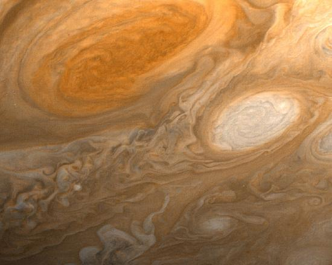
The emerging field of complexity, like the now almost traditional field of chaos, is partly rooted in physics. Both attempt to see similar systematics in a very broad range of phenomena and, hence, generate a better understanding of them. Time will tell what impact these fields have on more traditional areas of physics as well as on the other disciplines they relate to.
📖 OpenStax College Physics, Section 34.5. openstax.org · CC BY 4.0
- Identify superconductors and their uses.
- Discuss the need for a high-Tcsuperconductor.
Superconductorsare materials with a resistivity of zero. They are familiar to the general public because of their practical applications and have been mentioned at a number of points in the text. Because the resistance of a piece of superconductor is zero, there are no heat losses for currents through them; they are used in magnets needing high currents, such as in MRI machines, and could cut energy losses in power transmission. But most superconductors must be cooled to temperatures only a few kelvin above absolute zero, a costly procedure limiting their practical applications. In the past decade, tremendous advances have been made in producing materials that become superconductors at relatively high temperatures. There is hope that room temperature superconductors may someday be manufactured.
Superconductivity was discovered accidentally in 1911 by the Dutch physicist H. Kamerlingh Onnes (1853–1926) when he used liquid helium to cool mercury. Onnes had been the first person to liquefy helium a few years earlier and was surprised to observe the resistivity of a mediocre conductor like mercury drop to zero at a temperature of 4.2 K. We define the temperature at which and below which a material becomes a superconductor to be itscriticaltemperature, denoted by \(T_{c}\). (See Figure .) Progress in understanding how and why a material became a superconductor was relatively slow, with the first workable theory coming in 1957. Certain other elements were also found to become superconductors, but all had \(T_{c}\)'s less than \(10 K\), which are expensive to maintain. Although Onnes received a Nobel prize in 1913, it was primarily for his work with liquid helium.
![The graph shows resistivity on the vertical axis and temperature on the horizontal axis. The resistivity goes from zero to zero point one five ohms and the temperature goes from four point one to four point four kelvin. The curve starts at less than ten to the minus five ohms just below four point two kelvin, then jumps up at four point two kelvin to about zero point one two ohms. As the temperature increases further, the resistivity climbs more or less linearly until it reaches about zero point one four ohms at a temperature just above four point four kelvin.](images/ch34/fig34-23-the-graph-shows-resistivity-on-the-verti.jpg)
In 1986, a breakthrough was announced -- a ceramic compound was found to have an unprecedented \(T_{c}\) of 35 K. It looked as if much higher critical temperatures could be possible, and by early 1988 another ceramic (this of thallium, calcium, barium, copper, and oxygen) had been found to have \(T_{c} = 125 K\) (see Figure .) The economic potential of perfect conductors saving electric energy is immense for \(T_{c}\)'s above \(77 K\), since that is the temperature of liquid nitrogen. Although liquid helium has a boiling point of \(4 K\) and can be used to make materials superconducting, it costs about $5 per liter. Liquid nitrogen boils at \(77 K\), but only costs about $0.30 per liter. There was general euphoria at the discovery of these complex ceramic superconductors, but this soon subsided with the sobering difficulty of forming them into usable wires. The first commercial use of a high temperature superconductor is in an electronic filter for cellular phones. High-temperature superconductors are used in experimental apparatus, and they are actively being researched, particularly in thin film applications.
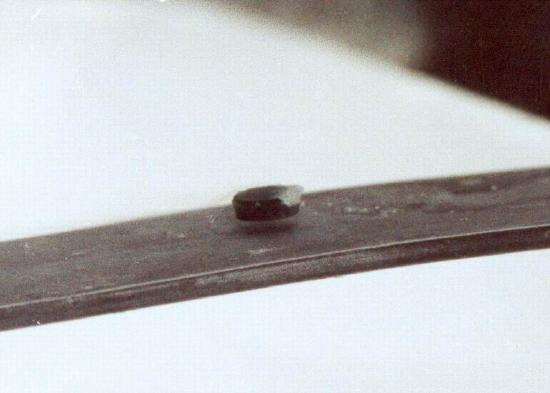
The search is on for even higher \(T_{c}\) superconductors, many of complex and exotic copper oxide ceramics, sometimes including strontium, mercury, or yttrium as well as barium, calcium, and other elements. Room temperature (about \(293 K\)) would be ideal, but any temperature close to room temperature is relatively cheap to produce and maintain. There are persistent reports of \(T_{c}\)'s over \(200 K\) and some in the vicinity of \(270 K\). Unfortunately, these observations are not routinely reproducible, with samples losing their superconducting nature once heated and recooled (cycled) a few times (see Figure . They are now called USOs or unidentified superconducting objects, out of frustration and the refusal of some samples to show high \(T_{c}\) even though produced in the same manner as others. Reproducibility is crucial to discovery, and researchers are justifiably reluctant to claim the breakthrough they all seek. Time will tell whether USOs are real or an experimental quirk.
The theory of ordinary superconductors is difficult, involving quantum effects for widely separated electrons traveling through a material. Electrons couple in a manner that allows them to get through the material without losing energy to it, making it a superconductor. High-\(T_{c}\) superconductors are more difficult to understand theoretically, but theorists seem to be closing in on a workable theory. The difficulty of understanding how electrons can sneak through materials without losing energy in collisions is even greater at higher temperatures, where vibrating atoms should get in the way. Discoverers of high \(T_{c}\) may feel something analogous to what a politician once said upon an unexpected election victory -- "I wonder what we did right?"
![Figure a is a graph of resistivity versus temperature. The resistivity goes from zero to zero point six milli ohm centimeters and the temperature goes from one hundred to three hundred kelvin. There are three curves on the graph. The first curve starts near zero point one milli ohm centimeters, one hundred kelvin, and increases linearly to zero point six milli ohm centimeters, two hundred and eighty kelvin. The second curve is at zero resistivity from 100 kelvin to about two hundred and thirty five kelvin, then jumps straight up to zero point four milli ohm centimeters, after which it increases linearly with temperature with the same slope as the first curve. The third curve has one point at minus zero point zero five milli ohm centimeters at about one hundred and thirty kelvin, then becomes positive and increases essentially linearly with the same slope as the first curve. Figure b shows a scaffolding structure made up of rods. At each vertex in the scaffold there is a ball that is either white, red, purple, or blue. Each color represents a different kind of atom. The white balls are the largest, then the red, then the purple, and the blue balls are the smallest. The balls are arranged in a systematic pattern. From bottom to top the scaffold layers are formed from white and red balls, then red and blue balls, then purple balls, then again red and blue balls, then finally white and red balls again. In each individual layer the balls form various grid patterns. This scaffold structure forms a brick-like shape and an identical such brick is positioned above it with a gap between the two bricks. The two bricks are connected together by a single layer of blue balls.](images/ch34/fig34-25-figure-a-is-a-graph-of-resistivity-versu.jpg)
📖 OpenStax College Physics, Section 34.6. openstax.org · CC BY 4.0
- Identify sample questions to be asked on the largest scales.
- Identify sample questions to be asked on the intermediate scale.
- Identify sample questions to be asked on the smallest scales.
Throughout the text we have noted how essential it is to be curious and to ask questions in order to first understand what is known, and then to go a little farther. Some questions may go unanswered for centuries; others may not have answers, but some bear delicious fruit. Part of discovery is knowing which questions to ask. You have to know something before you can even phrase a decent question. As you may have noticed, the mere act of asking a question can give you the answer. The following questions are a sample of those physicists now know to ask and are representative of the forefronts of physics. Although these questions are important, they will be replaced by others if answers are found to them. The fun continues.
These lists of questions are not meant to be complete or consistently important -- you can no doubt add to it yourself. There are also important questions in topics not broached in this text, such as certain particle symmetries, that are of current interest to physicists. Hopefully, the point is clear that no matter how much we learn, there always seems to be more to know. Although we are fortunate to have the hard-won wisdom of those who preceded us, we can look forward to new enlightenment, undoubtedly sprinkled with surprise.
📖 OpenStax College Physics, Section 34.7. openstax.org · CC BY 4.0
| Section | Title |
|---|---|
| 34.1 | 34.1: Cosmology and Particle Physics |
| 34.2 | 34.2: General Relativity and Quantum Gravity |
| 34.3 | 34.3: Superstrings |
| 34.4 | 34.4: Dark Matter and Closure |
| 34.5 | 34.5: Complexity and Chaos |
| 34.6 | 34.6: High-temperature Superconductors |
| 34.7 | 34.7: Some Questions We Know to Ask |